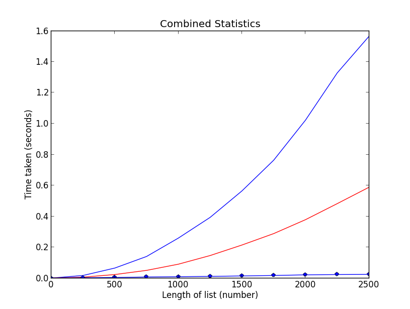
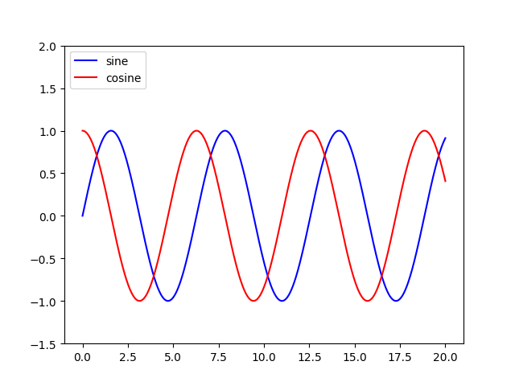
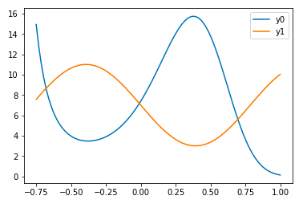

Adding a legend to PyPlot in Matplotlib in the simplest manner possible
TL;DR - > How can one create a legend for a line graph in
Matplotlib'sPyPlotwithout creating any extra variables?
Please consider the graphing script below:
if __name__ == '__main__': PyPlot.plot(total_lengths, sort_times_bubble, 'b-', total_lengths, sort_times_ins, 'r-', total_lengths, sort_times_merge_r, 'g+', total_lengths, sort_times_merge_i, 'p-', ) PyPlot.title("Combined Statistics") PyPlot.xlabel("Length of list (number)") PyPlot.ylabel("Time taken (seconds)") PyPlot.show()
As you can see, this is a very basic use of matplotlib's PyPlot. This
ideally generates a graph like the one below:

Nothing special, I know. However, it is unclear what data is being plotted where (I'm trying to plot the data of some sorting algorithms, length against time taken, and I'd like to make sure people know which line is which). Thus, I need a legend, however, taking a look at the following example below(from the official site):
ax = subplot(1,1,1) p1, = ax.plot([1,2,3], label="line 1") p2, = ax.plot([3,2,1], label="line 2") p3, = ax.plot([2,3,1], label="line 3") handles, labels = ax.get_legend_handles_labels() # reverse the order ax.legend(handles[::-1], labels[::-1]) # or sort them by labels import operator hl = sorted(zip(handles, labels), key=operator.itemgetter(1)) handles2, labels2 = zip(*hl) ax.legend(handles2, labels2)
You will see that I need to create an extra variable ax. How can I add a
legend to my graph without having to create this extra variable and
retaining the simplicity of my current script?
Answer
Add a label= to each of your plot() calls, and then call
legend(loc='upper left').
Consider this sample (tested with Python 3.8.0):
import numpy as np import matplotlib.pyplot as plt x = np.linspace(0, 20, 1000) y1 = np.sin(x) y2 = np.cos(x) plt.plot(x, y1, "-b", label="sine") plt.plot(x, y2, "-r", label="cosine") plt.legend(loc="upper left") plt.ylim(-1.5, 2.0) plt.show()
 Slightly modified from this tutorial: http://jakevdp.github.io/mpl_tutorial/tutorial_pages/tut1.html
Suggest
You can access the Axes instance (ax) with plt.gca(). In this case, you
can use
plt.gca().legend()
You can do this either by using the label= keyword in each of your
plt.plot() calls or by assigning your labels as a tuple or list within
legend, as in this working example:
import numpy as np import matplotlib.pyplot as plt x = np.linspace(-0.75,1,100) y0 = np.exp(2 + 3*x - 7*x**3) y1 = 7-4*np.sin(4*x) plt.plot(x,y0,x,y1) plt.gca().legend(('y0','y1')) plt.show()

However, if you need to access the Axes instance more that once, I do
recommend saving it to the variable ax with
ax = plt.gca()
and then calling ax instead of plt.gca().